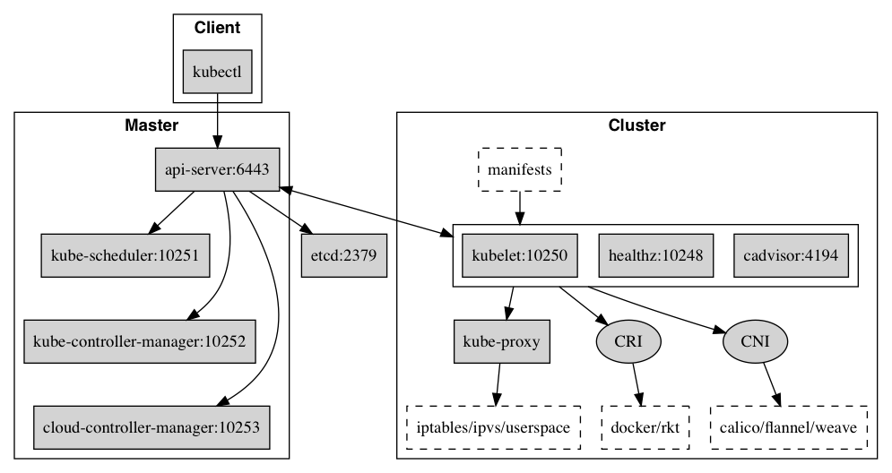
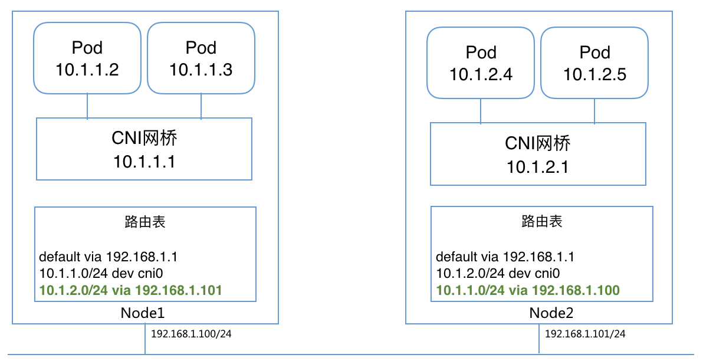

CNI (Container Network Interface) 插件是可执行文件，最早是由CoreOS发起的容器网络规范，现被CNCF(Cloud Native Computing Foundation)接管，是Kubernetes网络插件的基础。其基本思想为：Container Runtime在创建容器时，先创建好network namespace，然后调用CNI插件为这个netns配置网络，其后再启动容器内的进程。CNI仅关心容器创建时的网络分配，容器被删除时释放网络资源。

每个节点(Node)都运行kubelet，接受master的命令并向master汇报运行状态
kubelet通过CNI控制Pod的网络配置
CNI网络插件，网络配置(JSON格式)默认放置在/etc/cni/net.d目录，可执行二进制插件文件放置在/opt/cni/bin目录；知名的CNI插件包括bridge、calico等
CNI插件包括两部分：
CNI Plugin负责给容器配置网络，它包括两个基本的接口
配置网络: AddNetwork(net NetworkConfig, rt RuntimeConf) (types.Result, error)
清理网络: DelNetwork(net NetworkConfig, rt RuntimeConf) error
IPAM(IP Adress Management) Plugin负责给容器分配IP地址，主要实现包括host-local和dhcp
CNI 框架
配置文件解析结果
网络配置文件的解析结果存放在 NetworkConfigList 中，有如下的数据结构来表示。
可以对照如下的网络配置来看
{
"cniVersion": "0.4.0",
"name": "mynet",
"type": "sriov",
"bridge": "cni0",
"pf": ["p4p1"],
"ibgp": false,
"ipam": {
"type": "static",
"addresses": [
{"address": "10.10.0.1/32"}
],
"routes": [
{"dst": "0.0.0.0/0", "gw":"1.1.0.1"}
]
}
}
type IPAM struct {
Type string `json:"type,omitempty"`
}
type NetConf struct {
CNIVersion string `json:"cniVersion,omitempty"` #cni版本号
Name string `json:"name,omitempty"` #网络名
Type string `json:"type,omitempty"` #可执行cni插件名
Capabilities map[string]bool `json:"capabilities,omitempty"` #本网络支持的特殊能力
IPAM IPAM `json:"ipam,omitempty"` #ipam配置
DNS DNS `json:"dns"` #dns配置
RawPrevResult map[string]interface{} `json:"prevResult,omitempty"`
PrevResult Result `json:"-"` #调用cni插件前，被赋值；第一次调用cni插件为空结构，第二次调用为上一次执行结果
#runtimeConfig:{} #调用cni插件前，被buildOneConfig()赋值，根据配置项Capabilities，
#从参数CAP_ARGS传入中（临时存储在RuntimeConf.CapabilityA
}
###.conf/.json配置文件解析结果
#配置文件格式
#{
# "cniVersion":"0.4.0",
# "name":"mynet",
# "type":"sriov",
# ...
# "ipam":{...}
#}
// libcni/api.go
type NetworkConfig struct {
Network *types.NetConf #CNI标准中的网络配置字段
Bytes []byte #本网络配置的字节流
}
type NetworkConfigList struct {
Name string #网络名
CNIVersion string #cni版本号
DisableCheck bool #禁止运行时执行CHECK动作，通常用于某些一定返回错误的cni插件，json字段"disableCheck"
Plugins []*NetworkConfig #网络配置
Bytes []byte #整个配置文件的字节流
}
###.conflist配置文件解析结果
#配置文件格式
#{
# "name":"mynet",
# "cniVersion":"0.4.0",
# "plugins":[
# {"cniVersion":"0.4.0", "name":"mynet", "type":"sriov", ..., "ipam":{...}}
# ]
#}
存储调用cni插件时的参数
// libcni/api.go
type RuntimeConf struct {
ContainerID string #格式"cnitool-网络命名空间hash值"
NetNS string #网络命名空间，os.Args[3]
IfName string #接口名，通过变量CNI_IFNAME指定，默认eth0
Args [][2]string #通过变量CNI_ARGS="key=val;key=val"传入，如果cni插件不识别可忽略
CapabilityArgs map[string]interface{} #通过变量CAP_ARGS={key:val, key:val}传入，指定某特定key应该取的特定值
#后续通过函数buildOneConfig()构建key为runtimeConfig的字典，存放插件支持的特定值
CacheDir string #缓存cni插件执行结果，默认值"/var/lib/cni"
} #一般情况下，执行结果以文件形式存储到目录：/var/lib/cni/results/网络名-容器ID-容器接口名
cni插件返回结果
// 路由信息，pkg/types/types.go
type Route struct {
Dst net.IPNet
GW net.IP
}
// cni插件返回结果(0.4.0版本)，pkg/types/current/types.go
type IPConfig struct { ##配置的IP
Version string #“4”/“6”
Interface *int #对应的接口，0-n, Index into Result structs Interfaces list
Address net.IPNet #IP+掩码, "10.22.0.4/16"
Gateway net.IP #IP地址, "10.22.0.1"
}
type Interface struct { ##创建的接口
Name string `json:"name"`
Mac string `json:"mac,omitempty"`
Sandbox string `json:"sandbox,omitempty"` #容器的网络命名空间路径，如"/var/run/netns/cni_test"
}
type Result struct { ##cni插件返回结果
CNIVersion string `json:"cniVersion,omitempty"`
Interfaces []*Interface `json:"interfaces,omitempty"` #接口数组
IPs []*IPConfig `json:"ips,omitempty"` #IP地址数组
Routes []*types.Route `json:"routes,omitempty"` #路由信息
DNS types.DNS `json:"dns,omitempty"` #DNS信息
}
cnitool 框架
###运行cnitool命令行如下，需提供三个参数，并根据需要指定搜索路径（配置文件、插件在默认路径不需前置变量）
###三个参数：动作(os.Args[1]) 网络名(os.Args[2]) 网络命名空间(os.Args[3])
#NETCONFPATH=$NETCONFPATH CNI_PATH=$CNI_PATH $CNI_PATH/cnitool add mynet /var/run/netns/cni_test
-main() 入口，cnitool/cnitool.go
-LoadConfList() 查找、加载配置文件，libcni/conf.go
-ConfFiles() 搜索".conflist"后缀配置文件
-ConfListFromFile() 粗略解析，查找"Name"字段=os.Args[2]的配置文件
-LoadConf() 搜索".conf"/".json"后缀配置文件
-ConfListFromConf() 转换为NetworkConfigList类型
-sha512.Sum512() 将网络命名空间路径hash，作为容器ID："cnitool-hash值"
0-AddNetworkList() 添加网络，libcni/api.go
-addNetwork() 构建执行上下文，libcni/api.go
-FindInPath() 查找cni插件
-buildOneConfig() 配置信息中添加"runtimeConfig:{}",以支持约定能力
-ExecPluginWithResult() pkg/invoke/exec.go
1-ExecPlugin()
-os.exec.CommandContext() 调用具体插件，pkg/invoke/raw_exec.go
环境变量如下os.Cmd.Env
CNI_COMMAND=ADD
CNI_CONTAINERID="cnitool-网络命名空间hash值"
CNI_NETNS=os.Args[3]
CNI_ARGS=命令行变量(CNI_ARGS)
CNI_IFNAME=命令行变量(CNI_IFNAME)
CNI_PATH=命令行变量(CNI_PATH)
os.Environ() #也传入系统参数，且放置在最后，避免覆盖用户自定义参数
标准输入输出
os.Cmd.Stdin=配置文件字节流
os.Cmd.Stdout=设定的bytes.Buffer，以便接收返回结果
os.Cmd.Stderr=执行环境的.Stderr
1-version.NewResult() 处理返回结果, pkg/version/version.go
-NewResult() 版本>=0.3.0，pkg/types/current/types.go
版本<=0.2.0，pkg/types/020/types.go
-setCachedResult() 存储返回信息，缓存文件名："/var/lib/cni/results/网络名-容器ID-容器接口名",libcni/api.go
###注意点：
#1. 配置文件后缀支持.conflist/.conf/.json，其中.conflist为新版本配置形式，而.conf/.json为老版本配置形式
# 因此，查找网络名对应的配置文件后，都统一转换为NetworkConfigList内存形式
#2. 可通过变量CAP_ARGS={key:val, key:val}，传入特定能力
#3. 可通过变量CNI_ARGS="key=val;key=val"，传入可忽略参数
#4. 可通过变量CNI_IFNAME=eth0，作为容器内接口名，默认eth0
#5. 可通过变量CNI_PATH传入插件搜索路径
#6. 可通过变量NETCONFPATH传入网络配置搜索路径
#7. 如果配置了plugins，即执行多个cni插件，调用每个cni插件前将上次执行结果带入，最后cni插件的执行结果返回到stdout
0-DelNetworkList() 删除网络，libcni/api.go
-getCachedResult() 读取对应的缓存文件，"/var/lib/cni/results/网络名-容器ID-容器接口名"
-delNetwork()
-buildOneConfig()
-ExecPluginWithoutResult() 删除配置，pkg/invoke/exec.go
-ExecPlugin() 和添加不同点：1）参数CNI_COMMAND=DEL；
2）配置文件NetworkConfigList.Plugins[xxx].NetConf.PrevResult预置为ADD命令缓存结果
-delCachedResult()
-os.Remove() 删除缓存文件
0-CheckNetworkList() 检查网络，libcni/api.go
和DelNetworkList()流程完全一致，仅在执行插件时，参数CNI_COMMAND=CHECK
bridge 插件
Bridge是最简单的CNI网络插件，它首先在Host创建一个网桥，然后再通过veth pair连接该网桥到container netns
Bridge模式下，多主机网络通信需要额外配置主机路由，或使用overlay网络(如下图绿色粗体标识)

bridge 流程
-main() bridge插件入口，plugins/main/bridge/bridge.go
-PluginMain() 插件框架入口，vendor/github.com/containernetworking/cni/pkg/skel/skel.go
-PluginMainWithError()
-pluginMain()
-getCmdArgsFromEnv() 获取命令、参数、stdin输入等，组织到"CmdArgs"
-checkVersionAndCall() ADD/DEL命令入口
-VersionReconciler.Check() 检查stdin传入的配置文件版本号是否支持，vendor/github.com/containernetworking/cni/pkg/version/reconcile.go
-cmdAdd/cmdDel() 插件执行函数，入参"CmdArgs"，plugins/main/bridge/bridge.go
###添加网络配置
-cmdAdd() bridge插件添加命令入口，plugins/main/bridge/bridge.go
-loadNetConf() 解析配置文件
#----------------------------以下为二层配置---------------------
-setupBridge()
-ensureBridge() 构建宿主机网桥，<TK!!!>如果不存在新建，存在仅读取属性
-netlink.LinkAdd() 创建网桥，$(netlink)/link_linux.go
-netlink.SetPromiscOn() 根据需要设置混杂模式
-bridgeByName() 如果网桥已存在，则读取其属性
-netlink.LinkByName()
-netlink.LinkSetUp() 启动网桥，link up
-ns.GetNS() 打开网络空间（其实就是文件），pkg/ns/ns_linux.go
-setupVeth() 创建vetp接口
1-NetNS.Do() 在容器网络命名空间执行，pkg/ns/ns_linux.go
-ip.SetupVeth() pkg/ip/link_linux.go
-makeVeth()
-RandomVethName() 构建宿主机侧接口名，"veth+4字节随机数"
-makeVethPair() 创建veth接口对
-netlink.LinkAdd()
-netlink.LinkByName()
-netlink.LinkSetUp()
-netlink.LinkSetNsFd() 宿主机接口设置到宿主机网络空间
-ifaceFromNetlinkLink() 构建创建结果信息，"net.Interface"
1-netlink.LinkSetMaster() 宿主机veth口添加到网桥
-netlink.LinkSetHairpin() 宿主机veth口按需设置发卡模式
#----------------------------以下为三层配置--------------------
-ipam.ExecAdd() 运行三层IPAM插件, <TK!!!>仅传入stdin数据，共用此程序的环境os.Getenv()
-invoke.DelegateAdd() vendor/github.com/containernetworking/cni/pkg/invoke/delegate.go
-delegateCommon()
-ExecPluginWithResult() vendor/github.com/containernetworking/cni/pkg/invoke/exec.go
-ExecPlugin()
-version.NewResult()
-current.NewResultFromResult() 解析返回结果，"Result"，vendor/github.com/containernetworking/cni/pkg/types/current/types.go
-calcGateways() 根据返回结果计算网关IP地址、默认路由
-NetNS.Do() 容器命名空间
-ipam.ConfigureIface() 配置容器IP地址
-arping.GratuitousArpOverIface() 免费Arp
-ensureAddr() 网桥作为网关，需要配置IP地址
-netlink.AddrAdd()
-enableIPForward() 设置网桥forward属性
-ip.SetupIPMasq() 设置iptables, pkg/ip/ipmasq_linux.go
#----------------------------打印结果-------------------------
-types.PrintResult()
-Print() 打印返回结果到"stdout"，vendor/github.com/containernetworking/cni/pkg/types/current/types.go
-PrintTo()
###删除网络配置
-cmdDel() bridge插件删除命令入口，plugins/main/bridge/bridge.go
-loadNetConf() 解析配置文件
-ipam.ExecDel() 运行三层IPAM插件
-ip.DelLinkByNameAddr()
-ip.TeardownIPMasq()
主要的流程：
- 调用setupBridge确保机器上有对应的bridge，然后再调用setupVeth在容器对应的namespace下创建好虚拟网络接口。
- 创建完成，就需要通过ipam.ExecAdd(n.IPAM.Type, args.StdinData)向IPAM插件获取IP地址了。 拿到了IP地址，就会根据IP地址计算对应的路由和网关，然后调用ipam.ConfigureIface(args.IfName, result)将IP地址设置到对应的虚拟网络接口上。
- 还需要将主机上的bridge加上网关的IP，并且开启主机的ip_forward
- 最后再调用ip.SetupIPMasq(ip.Network(&ipc.Address), chain, comment)加上IP转发规则，一切正常，按要求输出结果到stdout整个Add操作结束。
运行 bridge 插件
bridge 插件网络配置示例
###bridge插件配置示例
{
"cniVersion": "0.3.0", #CNI版本号
"name": "mynet", #网络名称，需保证唯一性
"type": "bridge", #插件类型，即插件可执行文件名
"bridge": "mynet0", #
"isDefaultGateway": true, #
"forceAddress": false, #
"ipMasq": true, #将宿主机做网关，路由到container
"hairpinMode": true, #
"ipam": { #
"type": "host-local", #IPAM可执行插件名
"subnet": "10.10.0.0/16" #
}
}
创建 ns
$ sudo ip netns add cni_test
在 plugin 路径下
$ cat /etc/cni/net.d/11-mynet.conf | sudo CNI_COMMAND=ADD CNI_NETNS=/var/run/netns/cni_test CNI_PATH=./bin CNI_IFNAME=eth0 CNI_CONTAINERID=xxx ./bin/bridge
或者通过 cnitool 来运行插件，cnitool 调用对应的 type 的插件并且传递响应的参数
$ sudo CNI_PATH=./bin cnitool add bridge /var/run/netns/testing
{
"cniVersion": "0.4.0",
"interfaces": [
{
"name": "cni0",
"mac": "9a:f2:1f:e9:2a:ae"
},
{
"name": "vethc895566c",
"mac": "ca:06:5a:81:3b:2d"
},
{
"name": "eth0",
"mac": "32:fb:77:5b:58:9e",
"sandbox": "/var/run/netns/cni_test"
}
],
"ips": [
{
"version": "4",
"interface": 2,
"address": "10.22.0.2/16",
"gateway": "10.22.0.1"
}
],
"routes": [
{
"dst": "0.0.0.0/0"
}
],
"dns": {}
查看配置结果
$ ifconfig cni0
cni0 Link encap:Ethernet HWaddr 9a:f2:1f:e9:2a:ae
inet addr:10.22.0.1 Bcast:10.22.255.255 Mask:255.255.0.0
$ brctl show
bridge name bridge id STP enabled interfaces
cni0 8000.9af21fe92aae no vethc895566c
$ sudo ip netns exec cni_test ifconfig
eth0 Link encap:Ethernet HWaddr 32:fb:77:5b:58:9e
inet addr:10.22.0.2 Bcast:10.22.255.255 Mask:255.255.0.0
$ sudo ip netns exec cni_test ip route
default via 10.22.0.1 dev eth0
10.22.0.0/16 dev eth0 proto kernel scope link src 10.22.0.2
删除网络配置
$ sudo ip netns del cni_test
$ sudo iifconfig cni0 down
$ sudo ibrctl delbr cni0
IPAM
host-local是最常用的CNI IPAM插件，用来给container分配IP地址，以 local-host 为例。
数据结构
###路由信息，vendor/github.com/containernetworking/cni/pkg/types/types.go
type IPNet net.IPNet
type Route struct {
Dst net.IPNet
GW net.IP
}
###IPAM插件关注的网络配置，plugins/ipam/host-local/backend/allocator/config.go
type Range struct {
RangeStart net.IP `json:"rangeStart,omitempty"` #起始值
RangeEnd net.IP `json:"rangeEnd,omitempty"` #结束值
Subnet types.IPNet `json:"subnet"` #所属段
Gateway net.IP `json:"gateway,omitempty"` #配置此IP段中的IP时，对应的gw
}
type RangeSet []Range
type IPAMConfig struct {
*Range
Name string
Type string `json:"type"`
Routes []*types.Route `json:"routes"`
DataDir string `json:"dataDir"` #存储IPAM插件结果，默认值"/var/lib/cni/networks"
ResolvConf string `json:"resolvConf"`
Ranges []RangeSet `json:"ranges"` #可分配IP段集合
IPArgs []net.IP `json:"-"` #存储从命令行参数CNI_ARGS，或配置参数args传入的需要配置的指定的IP地址
}
type IPAMArgs struct {
IPs []net.IP `json:"ips"` #配置文件可指定接口需要配置的IP
}
type Net struct {
Name string `json:"name"` #网络名
CNIVersion string `json:"cniVersion"` #
IPAM *IPAMConfig `json:"ipam"` #本插件关注的配置
RuntimeConfig struct { #The capability arg
IPRanges []RangeSet `json:"ipRanges,omitempty"`
} `json:"runtimeConfig,omitempty"`
Args *struct { #可忽略的配置项
A *IPAMArgs `json:"cni"`
} `json:"args"`
}
local-host插件流程
###框架流程同CNI插件，略过
###ADD指令: 每个IP range都分配一个IP，并且返回其配置的gw；
### 如果配置文件通过args，或通过CNI_ARGS传入了必须配置的IP，则要求此IP属于配置的IP段，否则报错
### 配置的IP总个数为IP range数，要求的IP必须位于配置的IP range，如果没有指定IP，则从IP range顺序取
-cmdAdd() 入口函数,plugins/ipam/host-local/main.go
-LoadIPAMConfig() 解析参数、配置文件，提取IP段范围，plugins/ipam/host-local/backend/allocator/config.go
-types.LoadArgs() 解析${CNI_ARGS}，<TK!!!>仅解析"ip=xxx", 并且仅保存最后一个
-解析"Net.args" 存储到"IPAMConfig.IPArgs"
-将"IPAMConfig.Range"添加到"IPAMConfig.Ranges"
-将"Net.runtimeConfig.IPRanges"添加到"IPAMConfig.Ranges"
-Overlaps() 判断地址段是否存在重叠, plugins/ipam/host-local/backend/allocator/range.go
-parseResolvConf() 解析指定的DNS配置文件，获取DNS地址, plugins/ipam/host-local/dns.go
-disk.New() 创建结果缓存目录，默认"/var/lib/cni/networks/网络名", plugins/ipam/host-local/backend/disk/backend.go
-allocator.Get() 获取符合要求的某个具体IP地址,plugins/ipam/host-local/backend/allocator/allocator.go
-Store.Reserve() plugins/ipam/host-local/backend/disk/backend.go
"/var/lib/cni/networks/网络名/已分配IP地址"存储"容器ID\n接口名"
"/var/lib/cni/networks/网络名/last_reserved_ip.IPAMConfig-Ranges数组索引"存储"已分配IP地址"
-types.PrintResult() 输出分配结果到stdout
Result.Routes = IPAMConfig.Routes
Result.IPs = 提取的IP、网关
Result.DNS = IPAMConfig.ResolvConf配置解析结果
###DEL指令
-cmdDel() 入口函数,plugins/ipam/host-local/main.go
-LoadIPAMConfig()
-disk.New()
-ipAllocator.Release() 释放IP，清理记录的缓存目录，plugins/ipam/host-local/backend/disk/backend.go
-Store.ReleaseByID() 删除文件"/var/lib/cni/networks/网络名/已分配IP地址"
-ReleaseByKey()
运行 host-local 插件
host-local 配置示例
{
"ipam": {
"type": "host-local",
"subnet": "10.10.0.0/16",
"rangeStart": "10.10.1.20",
"rangeEnd": "10.10.3.50",
"gateway": "10.10.0.254",
"routes": [
{ "dst": "0.0.0.0/0" },
{ "dst": "192.168.0.0/16", "gw": "10.10.5.1" }
],
"dataDir": "/var/my-orchestrator/container-ipam-state"
}
}
cat ./net.d/10-mynet.conf | sudo CNI_COMMAND=ADD CNI_CONTAINERID=xxx CNI_NETNS=/var/run/netns/cni_test CNI_IFNAME=eth0 CNI_PATH=./bin ./bin/host-local
{
"cniVersion": "0.4.0",
"ips": [
{
"version": "4",
"address": "10.22.0.5/16",
"gateway": "10.22.0.1"
}
],
"routes": [
{
"dst": "0.0.0.0/0"
}
],
"dns": {}
}